THE LITTLEST SISTER, WHEN SHE BLACKS OUT
Twelve years after the Thousand-Year Blood War, Hell keeps an intake office for the dead — stamping souls claimed on paper, hearings that never happened. The brother laid the sword down. The sister sees the chains. And her claim is the one the office cannot file: her power was never transferred, never recorded — it is natural, the Kurosaki bloodline's own. Free to read. The series now stands at Episodes 1–5 — Movements I and II. Movement III, the Moonless Hearing, is not yet drawn.
EPISODE 1 — THE INTAKE


THE SCRIPT — JAPANESE FIRST, ENGLISH BENEATH
# THE LITTLEST SISTER, WHEN SHE BLACKS OUT ## Manga Arc — Episode 1: THE INTAKE （受付） Flagpole of Claim and Coinage: Johnathan 'Qasparr' Monroe, ARR, All Rights Reserved, Without Prejudice. Private register — the Bleach publication hold stands. Fan-work arc from the founder's treatment; characters credited to Tite Kubo / Shueisha / Pierrot / VIZ. Desk script under his Flagpole. FORMAT: Manga panel script with PARALLEL SUBS — each speech and caption carries the Japanese first (as spoken) and the English directly beneath. The Japanese is set in the FIRST EMPIRE'S DIALECT [desk reading, declared]: imperial-era register — kyuujitai character forms, historical kana, the de-aru voice for narration, katakana officialese for Hell's office, and Karin's own blunt plain speech left plain. MVRRAMASSA and the dance are the founder's; the dance's full form is reserved to the hearing. ——— PANEL 1 — Wide. Karakura Town at night. The Kurosaki clinic, one lit window. The sky: cloud-choked, starless, MOONLESS. CAPTION: 月無き夜、空座町。 [ A moonless night. Karakura Town. ] CAPTION: 戰ひは終はりて、十二年。 [ Twelve years since the war ended. ] PANEL 2 — The clinic step. KARIN, 25, clinic coat over her shoulders, breath smoking. Across the step, a seated SOUL in a torn captain's haori stares at nothing. KARIN: …見えるよ、あんた。 [ ...I can see you. You know that. ] PANEL 3 — Close on the soul's wrists: CHAINS, link upon link, every link pressed with a paper stamp-tag. CAPTION: 鎖。判子だらけの、鎖。 [ Chains. Chains covered in stamps. ] PANEL 4 — CAPTAIN: 醫者か。 [ Are you the doctor? ] KARIN: 娘だ。名前は。 [ The daughter. Your name. ] PANEL 5 — The captain looks at his own stamped wrists. CAPTAIN: 名は——事務廳が上書きした。 [ My name — the Office wrote over it. ] PANEL 6 — Behind him, light folds open like a blind: a DESK in the dark, registers stacked to the ceiling, a CLERK seated, stamp raised. The intake office of Hell. CLERK (katakana officialese): 書類ニ不備ナシ。聽聞ハ不要デアル。 [ THE PAPERS ARE WITHOUT DEFECT. A HEARING IS UNNECESSARY. ] PANEL 7 — Karin. The flat stare. Frost runs off the step's edge. Every small sound in the street goes out like a lamp. KARIN: …寒いな。 [ ...Cold, isn't it. ] PANEL 8 — BLACKOUT. Her eyes white over entirely. At her jaw, the SHADOW OF A MASK, half-formed. Her hand closes on the chain. SFX: ドクン [ dokun — one heartbeat, too loud ] KARIN (white-eyed, quiet): この鎖、全部讀める。 [ I can read every link of this chain. ] PANEL 9 — She leans close to the captain, and SPEAKS — the panel withholds the word itself; only his face answers, wrecked with relief. KARIN: あんたの本當の名は—— [ Your true name is— ] PANEL 10 — The clerk's stamp, frozen mid-air. For the first time, the office looks up. CLERK: 其ノ名ハ、登録ヨリ抹消濟デアル。 [ THAT NAME HAS ALREADY BEEN STRUCK FROM THE REGISTER. ] CAPTION: 惡魔の舞は、まだ始まらぬ。 [ The Devil's Dance has not yet begun. ] ——— Episode 1 ends. The founder's rulings seated in this script: Karin leads; the blackout is Hollowfication arriving uninvited; her Bankai is INHERITED, and its release — the female version of AKUMA NO MAI MUGETSU — is reserved to Movement III, the Moonless Hearing. Her sword: MVRRAMASSA. Her mask's face: still his pen.
EPISODE 2 — THE SECOND STAMP
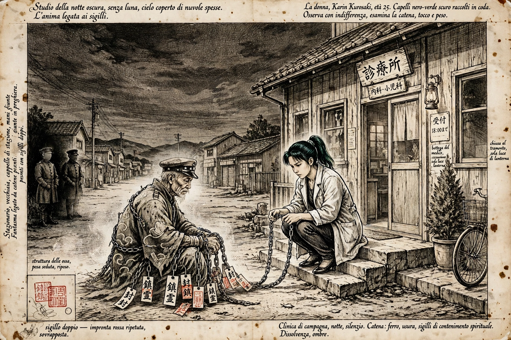
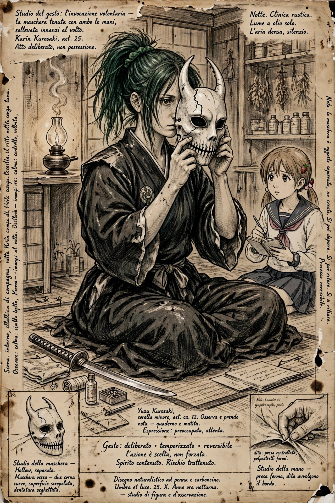
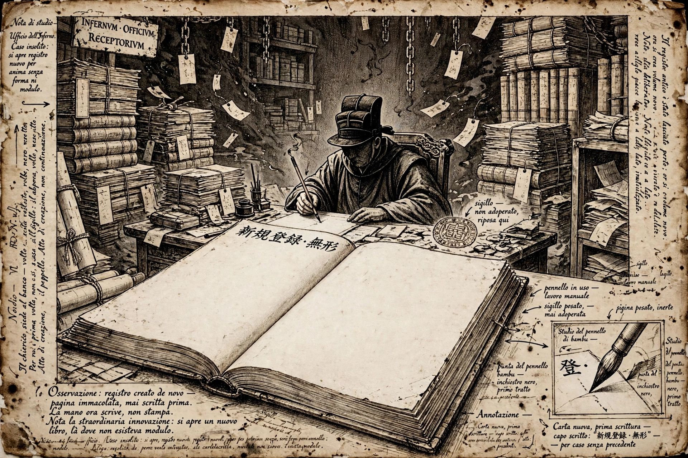
EPISODE 2 — THE SCRIPT — JAPANESE FIRST, ENGLISH BENEATH
# THE LITTLEST SISTER, WHEN SHE BLACKS OUT ## Manga Arc — Episode 2: THE SECOND STAMP （二度判） Flagpole of Claim and Coinage: Johnathan 'Qasparr' Monroe, ARR, All Rights Reserved, Without Prejudice. Private register — the Bleach publication hold stands. Fan-work arc from the founder's treatment; characters credited to Tite Kubo / Shueisha / Pierrot / VIZ. Desk script under his Flagpole. FORMAT: Manga panel script with PARALLEL SUBS — each speech and caption carries the Japanese first (as spoken) and the English directly beneath. The Japanese is set in the FIRST EMPIRE'S DIALECT [desk reading, declared]: imperial-era register — kyuujitai character forms, historical kana, the de-aru voice for narration, katakana officialese for Hell's office, and Karin's own blunt plain speech left plain. MVRRAMASSA and the dance are the founder's; the dance's full form is reserved to the hearing. PANELS ILLUSTRATED (Da Vinci pencil-sketch plates): Panel 2 -> panel-04-the-delivery.webp Panel 7 -> panel-05-the-invocation.webp Panel 10 -> panel-06-the-register.webp ——— PANEL 1 — Wide. The clinic step, the next night. The sky again cloud-choked and MOONLESS. Two junior CLERKS of the office, faces lost under their caps, set a seated SOUL down on the step like a delivered parcel, bow to the empty air, and are gone between one breath and the next. CAPTION: 翌夜。また、月無シ。 [ The next night. Again, no moon. ] CAPTION: 荷物ノ如ク、魂一ツ届ク。 [ Like a parcel, one soul is delivered. ] PANEL 2 — The soul: an elderly STATIONMASTER, cap straight, hands folded on his knees with terrible politeness. His chains are neat, almost tidy — and every paper tag on them is stamped TWICE, the second stamp laid over the first. CAPTION: 判ハ、二度押サレテヰタ。 [ The stamps had been pressed twice. ] PANEL 3 — KARIN crouched at his feet, running the chain through her fingers BACKWARD, link by link, from the death outward. KARIN: …新しい判が、古い判の上に。 [ ...The newer stamp sits on top of the old one. ] PANEL 4 — Close on two tags side by side. The first stamp carries the day of his death. The second certifies a hearing — and is dated AFTER it. KARIN: 死ンダ日ヨリ、後ノ日附ダ。 [ It's dated after the day he died. ] CAPTION: 聽聞ハ無カッタ。判ダケガ、後カラ来タノデアル。 [ There was no hearing. Only the stamp came, afterward. ] PANEL 5 — The stationmaster has not moved. His politeness is a man still standing on a platform, waiting to be called. STATIONMASTER: 儂ハ待ッタノダ。呼バレルノヲ、ズット待ッタ。 [ I waited. I waited and waited to be called. ] PANEL 6 — Inside the clinic. YUZU at the table with a notebook, marking a tally by lamplight. The lamp burns a finger's width lower than the night before. YUZU: 二度目。…明リガ、少シ落チタ。 [ Second time. ...The light's dropped a little. ] PANEL 7 — KARIN seated on the floor, worn shihakushou, the MASK across her knees — bone-white, horned, cracked, whole. THE sketch's mask. She lifts it with both hands, deliberate, eyes open. This is not the blackout. This is the INVOCATION. KARIN: 時間ハ三分。過ギタラ、外セ。 [ Three minutes. If I go past it, take it off me. ] CAPTION: 今度ハ、自分デ被ルノデアル。 [ This time, she puts it on herself. ] PANEL 8 — Masked. Her posture does not change; her voice does not change. Reading the chain's memory: a registrar's hand, brush and stamp — and in the stroke, a hesitation. KARIN (masked, steady): 押シタ手ガ、迷ッテヰル。…知ッテヰタンダナ、アンタモ。 [ The hand that stamped it hesitated. ...You knew, too. Didn't you. ] PANEL 9 — She takes the mask off herself, inside the three minutes. Her own face, tired, unimpressed. Behind her, Yuzu stares at the lamp: the flame stands exactly where it stood. YUZU: …明リ、落チテナイ。 [ ...The light didn't drop. ] KARIN: だろ。 [ Told you. ] PANEL 10 — The intake office of Hell. Registers to the ceiling. The CLERK turns a great ledger to a page that has never existed before, and writes a new heading with great care. CLERK (katakana officialese): 新規登録。項目——「讀者、未屆」。 [ NEW REGISTER ENTRY. ITEM: "READER, UNFILED." ] CAPTION: 事務廳ニハ彼女ノ用紙ガ無カッタ。故ニ、用紙ガ作ラレタノデアル。 [ The Office had no form for her. And so a form was made. ] ——— Episode 2 ends. The founder's rulings seated in this script: the bloodline is the KUROSAKI bloodline; her power is NATURAL, never transferred, and the office holds no form for her — so it makes one. The mask is the Leonardo sheet's mask, taken up by her own hand: the first INVOCATION, timed and set down again, against the blackout that takes her. Yuzu keeps the count of the light. The dance is not begun; it is reserved to Movement III, the Moonless Hearing. Her sword: MVRRAMASSA.
EPISODE 3 — THE TRUE NAME
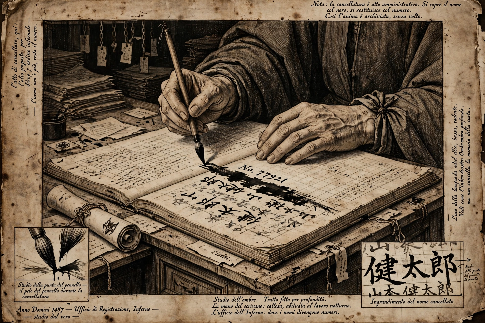
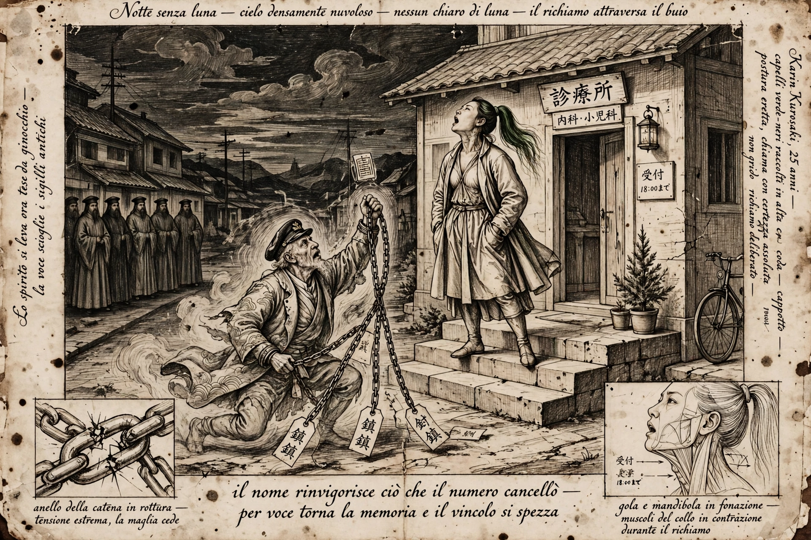
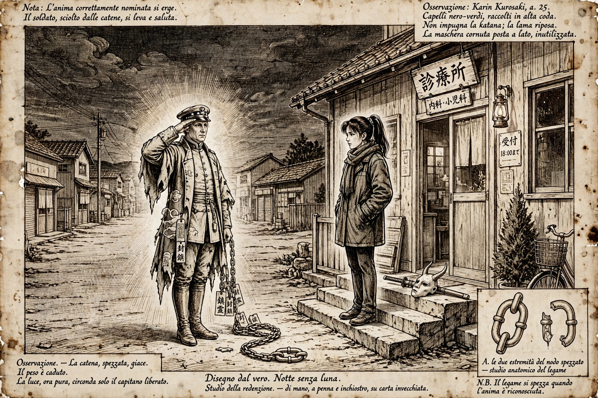
EPISODE 3 — THE SCRIPT — JAPANESE FIRST, ENGLISH BENEATH
# THE LITTLEST SISTER, WHEN SHE BLACKS OUT ## Manga Arc — Episode 3: THE TRUE NAME （本當ノ名） Flagpole of Claim and Coinage: Johnathan 'Qasparr' Monroe, ARR, All Rights Reserved, Without Prejudice. Private register — the Bleach publication hold stands. Fan-work arc from the founder's treatment; characters credited to Tite Kubo / Shueisha / Pierrot / VIZ. Desk script under his Flagpole. FORMAT: Manga panel script with PARALLEL SUBS — each speech and caption carries the Japanese first (as spoken) and the English directly beneath. The Japanese is set in the FIRST EMPIRE'S DIALECT [desk reading, declared]: imperial-era register — kyuujitai character forms, historical kana, the de-aru voice for narration, katakana officialese for Hell's office, and Karin's own blunt plain speech left plain. MVRRAMASSA and the dance are the founder's; the dance's full form is reserved to the hearing. MOVEMENT II — THE HEARINGS THAT NEVER HAPPENED begins. PANELS ILLUSTRATED (Da Vinci pencil-sketch plates): Panel 4 -> panel-07-the-writing-desk.webp Panel 8 -> panel-08-the-true-name.webp Panel 9 -> panel-09-the-release.webp ——— PANEL 1 — The clinic step, moonless dark. The CAPTAIN of the first night waits where she left him. KARIN kneels and takes up his chain — not to read it forward this time. Backward. CAPTION: 鎖ヲ、逆ニ辿ルノデアル。 [ She walks the chain backward. ] PANEL 2 — The chain's memory, younger light: a young officer at a ship's desk, writing his own name into a roster with a steady hand, proud of the strokes. CAPTION: 名ガ、本人ノ手デ書カレタ日。 [ The day the name was written by its owner's own hand. ] PANEL 3 — Deeper. The office, years past. A sealed directive comes down from above — no face, only a cord and a seal. The REGISTRAR receives it with both hands and bows to it. REGISTRAR (katakana officialese): 書キ換ヘヨ、トノ御指示デアル。 [ THE INSTRUCTION IS THAT IT BE OVERWRITTEN. ] PANEL 4 — Close on the registrar's desk. The brush blacks out the name, stroke by stroke. Above the ruin, a number is written in its place. But ink is only ink: beneath it, the old strokes stand in the paper's grain. CAPTION: 墨ノ下ニ、名ハ殘ッテヰタノデアル。 [ Under the ink, the name had remained. ] PANEL 5 — The clinic step, the present. Karin opens her eyes. Not white. Hers. The mask hangs untouched at her side — the discipline held: invocation, not blackout. KARIN: …分カッタ。 [ ...Got it. ] PANEL 6 — She stands before the captain. For once there is no flatness in her voice. It is almost a roll-call. KARIN: 立チナ。最後ニ、呼ンデヤル。 [ Stand up. I'll call you properly — one last time. ] PANEL 7 — The captain rises. His chains pull taut and sing. In the dark beyond the step the light folds open: the office is watching, a row of silhouette clerks, the stamp lowered and forgotten in a raised hand. PANEL 8 — KARIN speaks the TRUE NAME. Full voice, the way a name is called across water. KARIN: 磯部源次郎。 [ ISOBE GENJIROU. ] SFX: パリン [ parin — one link, snapping like glass ] PANEL 9 — ONE LINK — the first link, the name-link — hangs broken. The whole chain slackens in his hands. The captain stands straighter than death left him; something young crosses his face. He salutes HER. Not the office. Her. CAPTAIN: …有難ウ。醫者ノ娘サン。 [ ...Thank you. Doctor's daughter. ] CAPTION: 名ヲ正シク呼バレタ魂ハ、立ツノデアル。 [ A soul called by its right name stands up. ] PANEL 10 — The intake office. The CLERK stares into the great register, where one ruled line has gone quietly blank, the ink lifted out of it like breath off glass. CLERK (katakana officialese, shaken): 登録ガ…一ツ、消エタ。 [ A REGISTER ENTRY HAS... VANISHED. ] CAPTION: 事務廳ハ、初メテ損ヲ出シタノデアル。 [ For the first time, the Office showed a loss. ] ——— Episode 3 ends. The founder's rulings seated in this script: Movement I is closed; the hearings that never happened are now walked backward, chain by chain. The discipline holds — invocation, never blackout; the mask is carried, not needed. A soul is released the office's own way, in reverse: by being correctly named. The captain's true name is desk-given in this draft (Isobe Genjirou), the founder's pen over it. The dance is not begun; it is reserved to Movement III, the Moonless Hearing. Her sword: MVRRAMASSA.
EPISODE 4 — THE AUDITOR
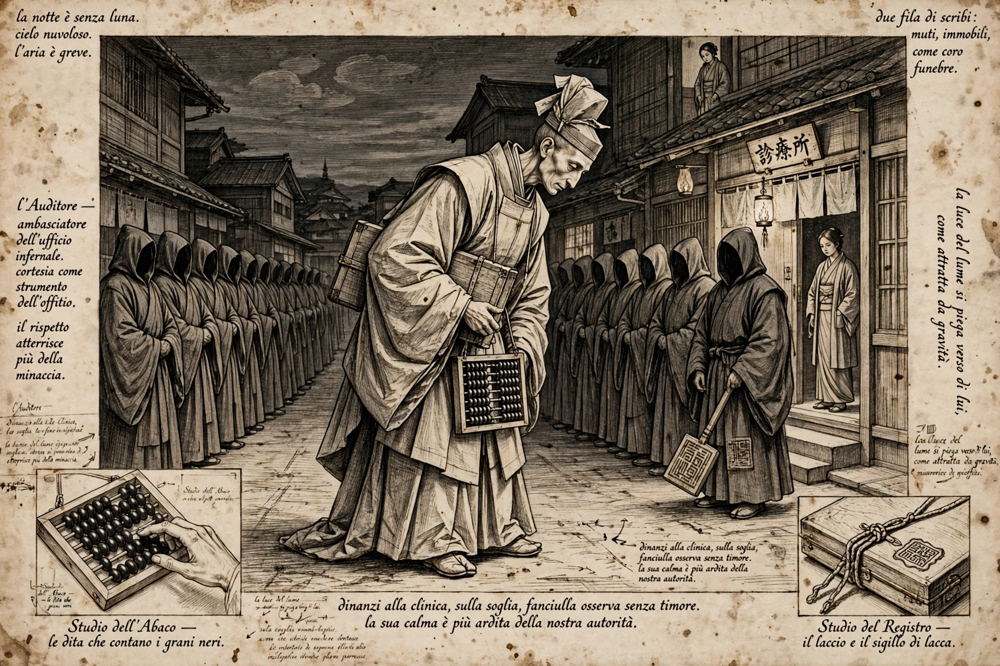
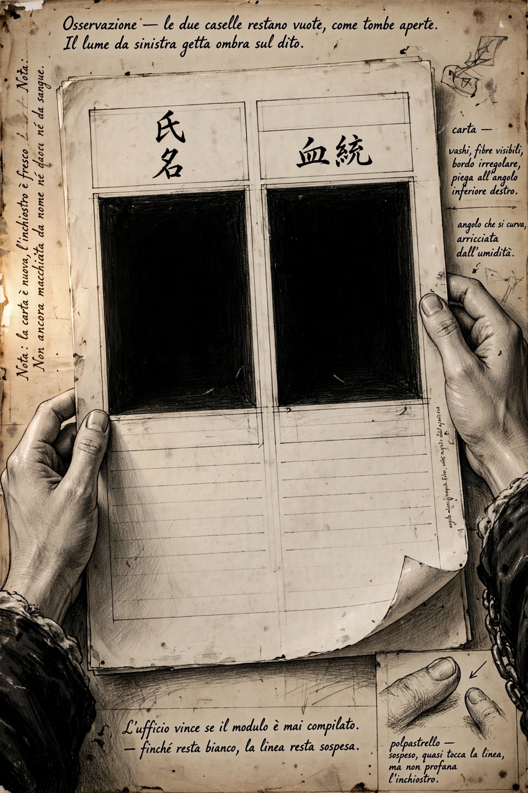
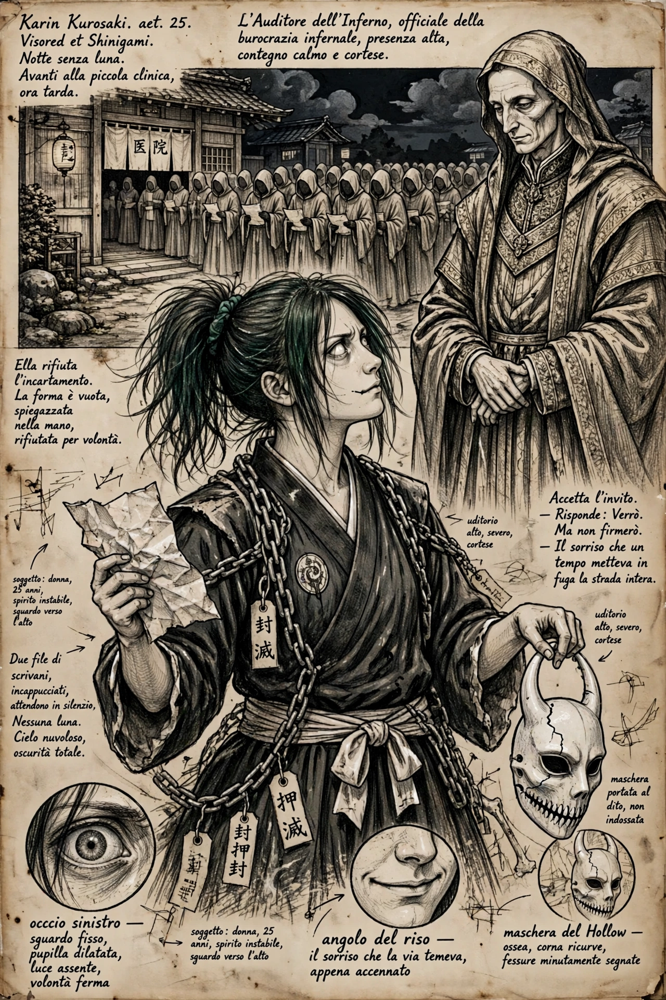
EPISODE 4 — THE SCRIPT — JAPANESE FIRST, ENGLISH BENEATH
# THE LITTLEST SISTER, WHEN SHE BLACKS OUT ## Manga Arc — Episode 4: THE AUDITOR （監査官） Flagpole of Claim and Coinage: Johnathan 'Qasparr' Monroe, ARR, All Rights Reserved, Without Prejudice. Private register — the Bleach publication hold stands. Fan-work arc from the founder's treatment; characters credited to Tite Kubo / Shueisha / Pierrot / VIZ. Desk script under his Flagpole. FORMAT: Manga panel script with PARALLEL SUBS — each speech and caption carries the Japanese first (as spoken) and the English directly beneath. The Japanese is set in the FIRST EMPIRE'S DIALECT [desk reading, declared]: imperial-era register — kyuujitai character forms, historical kana, the de-aru voice for narration, katakana officialese for Hell's office, and Karin's own blunt plain speech left plain. MVRRAMASSA and the dance are the founder's; the dance's full form is reserved to the hearing. MOVEMENT II — THE HEARINGS THAT NEVER HAPPENED, continued. The Auditor is not counsel. The Hearing is Movement III, later. PANELS ILLUSTRATED (Da Vinci pencil-sketch plates): Panel 5 -> panel-10-the-auditor.webp Panel 9 -> panel-11-the-form.webp Panel 10 -> panel-12-the-answer.webp ——— PANEL 1 — The clinic step, worn smooth by nights. Captions only, over the empty street: the deliveries, the readings, the one release, all behind us now. CAPTION: 七夜、續イタノデアル。 [ Seven nights, running. ] PANEL 2 — Inside. YUZU's notebook open on the table: page after page of small, even tally marks. Her pencil is down to a stub. The row of lamp-oil bottles by the wall stands emptier by one each time the eye crosses the page. CAPTION: 數ハ、姉妹ノ片方ガ付ケテヰル。 [ The count is kept by one of the sisters. ] PANEL 3 — Yuzu counts under her breath, and stops at the same place twice. YUZU: 十。…カリン、十ニナッタ。 [ Ten. ...Karin, it's reached ten. ] KARIN: 數エルナ、ユズ。 [ Stop counting, Yuzu. ] YUZU: 誰カガ數エナイト、誰モ止マラナイ。 [ If nobody counts, nobody stops. ] PANEL 4 — Over the whole town, a sound like one enormous page turning. In the street below, the shadows straighten themselves into columns. Something is coming down the road that has never needed the road before. CAPTION: 監査官ガ、降リテ來ルノデアル。 [ The Auditor is coming down. ] PANEL 5 — THE AUDITOR on the clinic step. Tall, in layered court robes older than the office itself, a long ledger-case under one arm and an abacus of black beads at his belt. His face is calm, and terribly polite. Behind him the clerks stand in two rows like a choir that has forgotten the song. He bows — precisely, not deeply. AUDITOR (katakana officialese): 監査デアル。協力ヲ乞ウ。 [ THIS IS AN AUDIT. YOUR COOPERATION IS REQUESTED. ] PANEL 6 — He unrolls a scroll at arm's length and reads the office's own losses back to the street, item by item, without heat. AUDITOR: 損失、一。疑義、三。…讀者、一。 [ LOSSES: ONE. QUERIES: THREE. ...READERS: ONE. ] PANEL 7 — KARIN steps down off the step. The mask is in her hand at her side — carried, not worn. She does not reach for anything. KARIN: 讀者ハ私ダ。 [ The reader is me. ] AUDITOR: 分カッテヰル。 [ WE KNOW. ] PANEL 8 — From the ledger-case the Auditor draws a single sheet — new paper, ink still dark on it — and offers it with both hands, the way one offers a verdict. AUDITOR: 貴女ノ用紙ヲ、用意シタ。出頭ヲ、命ズル。 [ WE HAVE PREPARED YOUR FORM. YOU ARE SUMMONED TO APPEAR. ] PANEL 9 — Close on the sheet in Karin's hands. Two ruled fields at its head, both empty, waiting like open graves: NAME — (blank). LINEAGE — (blank). KARIN (quiet): …名前ト、血統。 [ ...Name. And bloodline. ] CAPTION: 彼女ヲ屆ケサセレバ、事務廳ノ勝チデアル。 [ If they can get her filed, the Office wins. ] PANEL 10 — Karin looks up from the sheet. The flat stare — and under it, just barely, the grin the whole street learned young. The scary one, deciding. KARIN: 屆ケハ出サナイ。…デモ、行ッテヤル。聽聞トヤラヲ、見セテモラオウ。 [ I won't file. ...But I'll come. Let's see this "hearing" of yours. ] CAPTION: 惡魔の舞は、まだ始まらぬ。だが、招待ハ届イタノデアル。 [ The Devil's Dance has not yet begun. But the invitation has arrived. ] ——— Episode 4 ends — on a cliff's edge, by design. The founder's rulings seated in this script: the Auditor is an auditor, not counsel — Movement III's Hearing is NOT entered; the dance is not begun, only invited. The office's victory condition is paperwork: a name and a bloodline in two blank fields. The bloodline they would write down is the KUROSAKI bloodline, and she will not write it for them. Yuzu's count reaches ten — the number is desk-set in this draft, the founder's pen over it; what the count reaches before she says stop remains his open seam. Her sword: MVRRAMASSA. Her mask: the Leonardo sheet's mask, carried in her hand.
EPISODE 5 — THE REGISTRAR’S HAND
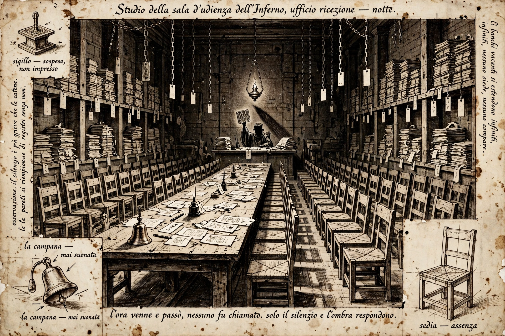
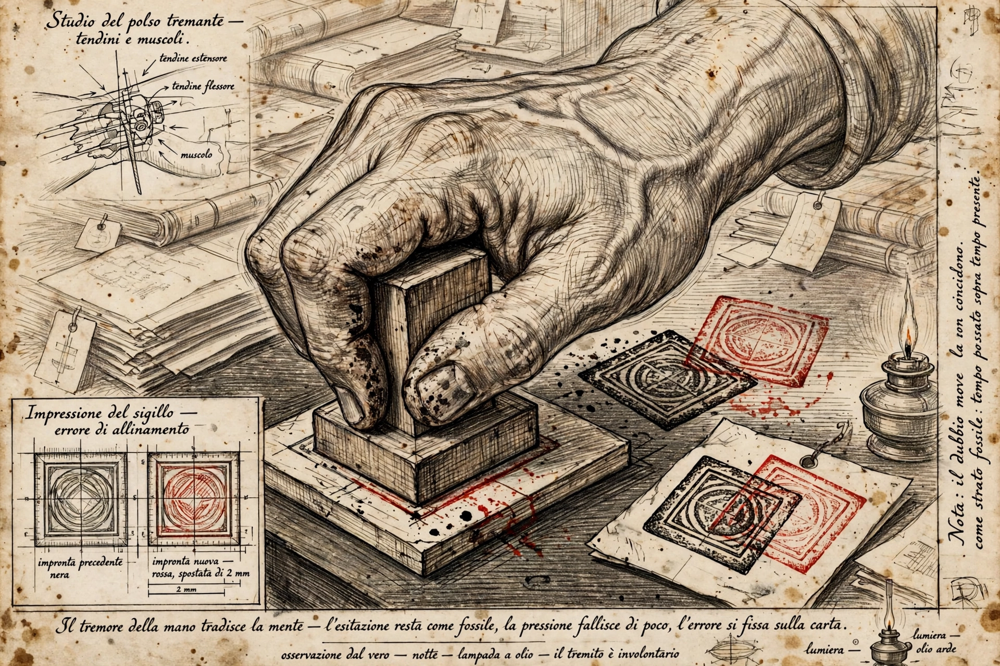
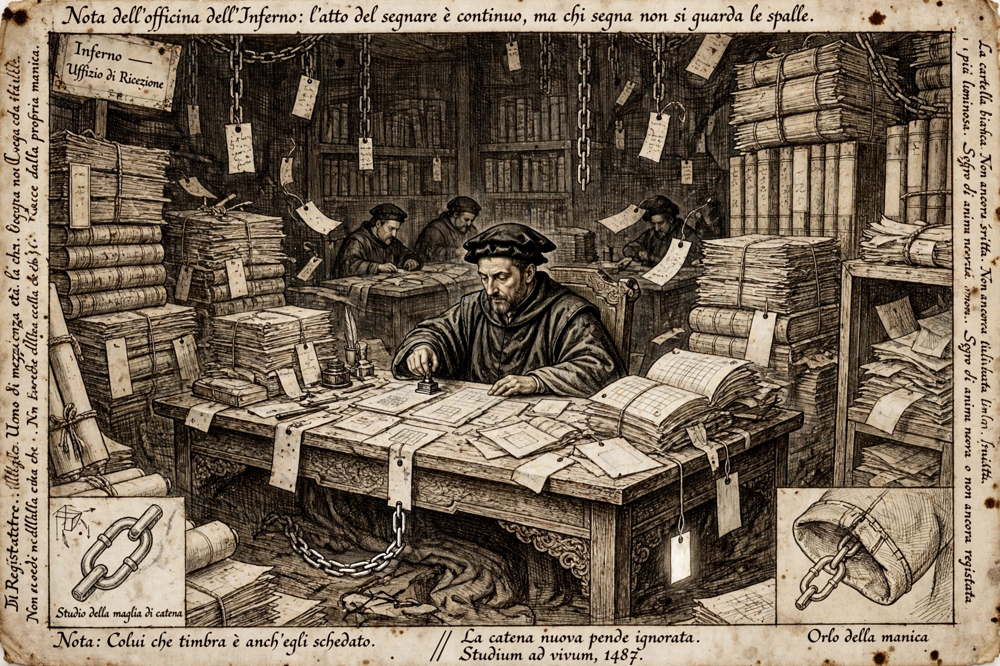
EPISODE 5 — THE SCRIPT — JAPANESE FIRST, ENGLISH BENEATH
# THE LITTLEST SISTER, WHEN SHE BLACKS OUT ## Manga Arc — Episode 5: THE REGISTRAR'S HAND （書記ノ手） Flagpole of Claim and Coinage: Johnathan 'Qasparr' Monroe, ARR, All Rights Reserved, Without Prejudice. Private register — the Bleach publication hold stands. Fan-work arc from the founder's treatment; characters credited to Tite Kubo / Shueisha / Pierrot / VIZ. Desk script under his Flagpole. FORMAT: Manga panel script with PARALLEL SUBS — each speech and caption carries the Japanese first (as spoken) and the English directly beneath. The Japanese is set in the FIRST EMPIRE'S DIALECT [desk reading, declared]: imperial-era register — kyuujitai character forms, historical kana, the de-aru voice for narration, katakana officialese for Hell's office, and Karin's own blunt plain speech left plain. MVRRAMASSA and the dance are the founder's; the dance's full form is reserved to the hearing. MOVEMENT II — THE HEARINGS THAT NEVER HAPPENED, continued. Built after Episodes 2–4 stood complete; the Hearing is not entered. The dance is not begun. PANELS ILLUSTRATED (Da Vinci pencil-sketch plates): Panel 4 -> panel-13-the-empty-hearing.webp Panel 5 -> panel-14-the-hesitation.webp Panel 8 -> panel-15-the-registrars-chain.webp ——— PANEL 1 — The clinic step. The STATIONMASTER still sits in his terrible politeness, cap straight, waiting to be called by a hearing that never sat. KARIN takes up his double-stamped chain a second time. KARIN: 今度ハ、押シタ手ヲ読ム。 [ This time I read the hand that stamped it. ] PANEL 2 — Backward along the chain: the office's delivery room, souls shelved like parcels awaiting collection, each with its tags. No faces. Only handwriting. CAPTION: 鎖ノ記憶ハ、手書キデ出來テヰル。 [ A chain's memory is made of handwriting. ] PANEL 3 — The night of the second stamp. A hearing room inside the office: a long table, a bell, rows of chairs — every chair empty. The hour for the hearing comes, and goes, in silence. CAPTION: 聽聞ノ時刻ハ、來テ、過ギタノデアル。 [ The hour of the hearing came, and passed. ] PANEL 4 — The REGISTRAR alone at the desk at the room's end, the stationmaster's tag before him, the great stamp raised. One lamp. All those empty chairs behind the stamp's shadow. His orders say the hearing was held. The chairs say otherwise. PANEL 5 — Close: the registrar's hand. It trembles — once, slightly. The stamp comes down anyway. But a fraction off, a hair to the left: the overlap on every tag is the fossil of that tremor. CAPTION: 迷ヒハ、化石ニナッテ殘ル。 [ Hesitation remains, as a fossil. ] PANEL 6 — Deeper along the memory: the registrar's desk, and on it the two papers of his life. A directive from above, cord and seal. And beside it, half-hidden under the blotter — his OWN file. From his own sleeve, where no one looks, the first bright links of a chain are forming. CAPTION: 押ス者モ、屆出濟ミデアル。 [ The one who stamps is also filed. ] PANEL 7 — The clinic step, the present. Karin opens her eyes. Hers. The mask untouched at her side; she has read by invocation, and what she read was a man's hand, shaking. KARIN: …アンタモ、判待チカ。 [ ...You're waiting on a stamp too. ] PANEL 8 — The intake office, now. The REGISTRAR at his desk among the registers, stamping steadily, competently — and from beneath his sleeve, trailing where his own eye never falls, one single chain link, and on it a tag that is BLANK. Unstamped. Unread. His. PANEL 9 — The clinic step. Karin lowers the stationmaster's chain, gently, the way one sets down a sleeping thing. She looks toward the dark where the office folds open — and closes her hand, and does not reach. KARIN: 今夜ハ、読マナイ。 [ Tonight, I don't read you. ] PANEL 10 — A high annex of the office. A clerk delivers a report; the AUDITOR reads it standing, the black beads of his abacus perfectly still for the first time. AUDITOR (katakana officialese, quietly): 讀マナカッタ、ト。 [ SHE DID NOT READ HIM. ] CAPTION: 彼女ノ遠慮ガ、事務廳ヲ一番怖レサセタノデアル。 [ Her restraint frightened the Office most of all. ] ——— Episode 5 ends. The founder's rulings seated in this script: Movement II continues — the records walked backward now reach the office's own people: the hand that stamps is itself filed, and its hesitation is preserved in every double stamp as a fossil. The discipline holds and deepens: invocation, never blackout — and now restraint, the reading deliberately NOT done. The Hearing is not entered; the dance is not begun; both are reserved to Movement III. Her sword: MVRRAMASSA. Her mask: the Leonardo sheet's mask, carried and unneeded.
THE STUDY SHEET

THE KARIN SERIES EBOOK — EPISODES 1–5
Own the ebook — $9, delivered on payment with a numbered receipt.
Own the ebook — $9, delivered on payment with a numbered receipt.
Put KARIN in the note. The whole series stays free to read, right here on this page.